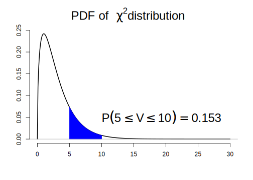

10.2 통계 시뮬레이션에 활용되는 수학 함수 및 분포 함수
10.2.1 수학함수
R은 광범위한 수학 함수를 내장하고 있고 다음 열거한 함수 목록은 그 일부임
exp(): 지수(e)를 밑으로 하는 지수 함수log(): 자연 로그 함수log10(): 10을 밑으로 하는 로그sqrt(): 제곱근abs(): 절대값sin(),cos(),tan()… : 삼각함수min(),max(): 벡터 내 최솟값과 최댓값 반환which.min(),which.max(): 벡터 내 최댓값과 최솟값에 대한 인덱스 반환sum(),prod(): 벡터 원소들의 합과 곱 결과 반환cumsum(),cumprod(): 백터 원소들의 누적합과 누적곱round(),floor(),ceiling(): 수치형 값의 반올림, 내림, 올림factorial(): 팩토리얼 함수 \(n!\)choose(): 조합 함수 (\(_n C_r = \frac{n!}{r!(n-r)!}\))rev(): 역순으로 배열rank(): 백터 원소 값들의 순위 반환
확장예제1: 확률계산
- \(P_i\): \(n\) 개의 독립적인 사건이 있고 \(i\) 번째 사건이 발생할 확률
- \(n = 3\) 일 때, 각 사건의 이름을 각각 A, B, C 라고 할 때 이 중 사건 하나가 발생할 확률
P(사건 하나가 발생할 확률) =
P(A가 일어나고 B와 C가 일어나지 않을 확률) +
P(A가 일어나지 않고 B가 일어나고 C가 일어나지 않을 확률) +
P(A, B가 일어나지 않고 C만 일어날 확률)- 여기서 P(A가 일어나고 B와 C가 일어나지 않을 확률) = \(P_A(1-P_B)(1-P_C)\) \(\rightarrow\) 나머지도 마찬가지임
- 일반화 하면
\[ \sum_{i=1}^{n} P_i(1-P_1)(1-P_2)\cdots (1-P_{i-1})(1-P_{i+1})\cdots (1-P_{n}) \]
- 구현 함수
# 벡터 p에서 p_i 계산 함수
probability_i <- function(p) {
notp <- 1 - p
tot <- 0
for (i in 1:length(p))
tot <- tot + p[i] * prod(notp[-i])
return(tot)
}
# test
set.seed(3)
p <- runif(3, 0, 1) # 0-1 사이 값 3개를 균일분포로부터 추출
probability_i(p)[1] 0.4947463확장예제2: 누적합, 누적곱
# cumsum, cumprod 함수 사용 예시
x <- c(2, 4, 1, 3, 7, 8)
cumsum(x); cumprod(x)[1] 2 6 7 10 17 25[1] 2 8 8 24 168 1344확장예제3: 최솟값, 최댓값
# which.min, which.max 사용 예시
set.seed(100)
x <- sample(1:100, 100)
idx_min <- which.min(x)
x[idx_min][1] 1idx_max <- which.max(x)
x[idx_max][1] 100# min(), max(), pmin(), pmax() 비교
set.seed(5)
x <- runif(5, 2, 4)
y <- runif(5, 2, 4)
z <- cbind(x, y)
min(z); max(z) # z의 전체 값 중 최솟값과 최댓값 반환[1] 2.2093[1] 3.913pmin(z); pmax(z) # 아무 값을 반환하지 않음 x y
[1,] 2.400429 3.402115
[2,] 3.370437 3.055920
[3,] 3.833752 3.615870
[4,] 2.568799 3.913000
[5,] 2.209300 2.220906 x y
[1,] 2.400429 3.402115
[2,] 3.370437 3.055920
[3,] 3.833752 3.615870
[4,] 2.568799 3.913000
[5,] 2.209300 2.220906# 두 열을 비교해 각 행에서 최솟값, 최댓값을 반환
pmin(z[, 1], z[, 2]) [1] 2.400429 3.055920 3.615870 2.568799 2.209300pmax(z[, 1], z[, 2])[1] 3.402115 3.370437 3.833752 3.913000 2.220906확장예제4: 미분/적분
- 문자의 미분 및 수치 적분 가능
# 도함수 구하기
## D() 함수 사용
dx <- D(expression(exp(x^2)), "x") # exp(x^2)을 x에 대해서 1차 미분한 도함수
set.seed(3)
x <- runif(3, 1, 2)
eval(dx) # 위 입력한 x에 대한 도함수 값 출력[1] 9.141245 94.842390 18.856751## deriv() 함수 사용
grad <- D(expression(x*sin(x)), "x")
# 도함수를 R의 function으로 바로 반환 가능
dx2 <- deriv(expression(x*sin(x)), "x", function.arg = TRUE)
dx2(x)[1] 1.074580 1.757109 1.361092
attr(,"gradient")
x
[1,] 1.3778035
[2,] 0.5482219
[3,] 1.2386966# 수치 적분
## integrate() 함수 사용
## 주어진 함수의 적분식을 구한 후, 입력 구간에 대한 적분값 계산
integrate(f = function(x) x^2, lower = 0, upper = 1)0.3333333 with absolute error < 3.7e-15확장예제 응용: Newton-Raphson method
임의의 함수 \(f(x)\)가 주어졌을 때 \(f(x) = 0\) (\(f(x)\)의 해)를 만족하는 \(x\)를 반복적인 수치계산을 통해 찾는 방법
- Newton-Raphson (N-R) 방법 적용 시 \(f(x)\)의 만족 조건
- \(x\)의 특정 범위 내에서 \(f(x) = 0\)를 만족하는 유일한 실수값 존재
- \(f(x)\)는 미분 가능한 함수
Newton-Raphson 알고리즘 예시
N-R 알고리즘(스케치)
step 1: 초기치 \(x_{old}\)를 설정
step 2: \(x_{old}\)에서 \(f(x_{old})\) 값 계산
step 3: \(x_{old}\)에서 접선의 기울기(미분계수) \(f'(x_{old})\) 계산
step 4: \(f'(x_{old})\)의 접선이 \(x\)축과 만나는 점을 새로운 값 \(x_{new}\)로 업데이트
\[ x_{new} = x_{old} - \frac{f(x_{old})}{f'(x_{old})} \]
step 5: 일정 조건을 만족할 때 까지 step 1 ~ step 4 반복
step 4에서 초기값 \(x_0\)이 주어졌을 때 \(f(x_0)\)의 접선은 \(f'(x_0)\) 이고 \((x_0, f(x_0))\)를 통과하므로 접선의 식은 아래와 같음
\[ f(x) = f'(x_0)(x - x_0) + f(x_0) \]
- \(f(x) = 0\) 일때 \(x\)의 값은
\[ x = x_0 -\frac{f(x_0)}{f'(x_0)} \] - 따라서 다음 단계에서 해의 근사치 \(x_{1} = x_0 - f(x_0)/f'(x_0)\) 이고, 이를 조금 더 일반화 하면,
\[ x_{n+1} = x_n - \frac{f(x_n)}{f'(x_n)} \]
- 위 식은 테일러 전개(Taylor expansion)를 통해 도출 가능(한 번 생각해 볼 것!!)
N-R 알고리즘의 특징
- 현재 \(x_{old}\) 또는 \(x_{n}\)이 0을 만족할 경우, 더 이상 다음 단계로 가지 않음.
- 현재 함수값이 0에서 멀리 떨어져 있을수록 다음 스텝이 커지고, 미분계수의 절대값이 클수록 다음 스텝이 작아짐
- 미분계수의 절대값이 크다 \(\rightarrow\) \(x_n\)을 조금만 움직여도 함수값이 크게 변한다는 의미
- 따라서 미분계수의 값을 다음 스텝에 반영해야 함.
- 다음 \(x_{new}\)의 방향은 \(f(x_{old})/f'(x_{old})\) 부호와 반대방향으로 결정
- 수렴속도가 빠르지만 초기값에 따라 알고리즘의 성능이 달라짐
- \(f'(x)\)를 반복적으로 계산해야 하고, 경우에 따라 \(f'(x) = 0\)이면 반복식 계산이 불가
반복 종료 조건
- 처음 설정한 최대 반복 횟수를 넘었을 때
- 더 이상 \(x\)의 값이 움직이지 않는다고 판단되었을 경우
- 함수의 값이 충분히 0에 가까워 졌을 경우
N-R 알고리즘 구현
- 알고리즘에 입력되어야 할 변수
- 초기값과 해를 찾을 범위 지정 \(\rightarrow\) 만약 초기값이 해당 범위를 벗어난 값이 입력되었다면 함수 종료
- 함수
- 반복횟수
- 0과 충분히 가까운 상수(종료 시 필요) \(\rightarrow\)
tol
- 함수 내부 또는 함수 외부에서 1차 미분 함수가 요구
- 함수 인수로 입력 vs. 함수 내부에서 도함수 계산?
- 도함수 계산 시 위 예제에서 사용한 R 내장 함수 사용 vs. 미분식 사용?
\[ \lim_{d \rightarrow 0} \frac{f(x + d) - f(x)}{d} \]
- 반복 종료조건에 도달할 때 까지 반복이 필요 \(\rightarrow\)
while문 사용 - 반복 조건: 반복이 최대 반복수보다 작고 \(|f(x_{new})|\) 값이
tol값보다 클 때 까지
newton_raphson <- function(FUN, # 함수
x0 = 1, # 초기값
max_iters = 5000, # 최대 반복 횟수
tol = 1.0e-9,
range = c(-Inf, Inf),
...)
{
iters <- 1;
grads <- deriv(as.expression(body(FUN)), "x", function.arg = TRUE)
# grads 반환값 중 "gradient" 값 = f'(x0)
gap <- x0 - FUN(x0)/attr(grads(x0), "gradient")
while(iters < max_iters & abs(gap) > tol) {
# x_new 계산
x_new <- x0 - FUN(x0)/attr(grads(x0), "gradient")
gap <- FUN(x_new)
# x_new 가 범위를 벗어난 경우 처리
if (x_new <= range[1]) x_new <- range[1]
if (x_new >= range[2]) x_new <- range[2]
iters <- iters + 1
x0 <- x_new # 초기값 업데이트
}
if (x_new == range[1] | x_new == range[2])
warning("마지막 점이 x 범위의 경계선 상에 있습니다.")
if (iters > max_iters)
warning("최대 반복 때 까지 해를 찾지 못했습니다.")
cat("x 가", x_new, "일 때 함수값:", FUN(x_new), "\n")
return(list(solution = x_new, iteration = iters))
}
## test: 위 동영상과 동일한 해를 갖는지 확인
f <- function(x) 5 * x^3 - 7 * x^2 - 40 * x + 100
newton_raphson(FUN = f,
x0 = 1,
range = c(-10, 10)) -> solsx 가 -3.151719 일 때 함수값: -3.547029e-11 Quiz: newton_raphson() 함수에서 1차 미분 도함수를 구하는 스크립트를 아래 일반 미분공식으로 변환한 함수 newton_raphson_gen()를 작성하고, 해당 함수가 정상적으로 작동하는지 확인하시오.
\[ \lim_{d \rightarrow 0} \frac{f(x + d) - f(x)}{d} \]
- 문제 제출이 필수는 아니지만 제출 시 가산점이 있음.
- 제출기간: 2020년 11월 6일 금요일
- 제출방법: 작성 스크립트를
학번-이름.R로 저장 후 E-mail로 제출
10.2.2 통계 분포 함수
R은 현존하는 대부분의 통계 확률 분포 함수를 제공하고 접두사 + 분포이름 형태의 함수명을 갖고 있으며, 보통 다음과 같은 접두사를 통해 분포 함수 생성
d: 밀도(density)의 약어로 확률 밀도함수(probability density function, pdf) 또는 이산형 분포의 확률 질량 함수(probability mass function, pmf)q: 분위수(quantile)의 약어로 상위 %에 해당하는 \(x\) 값을 반환p: 누적분포함수(cumulative density function, cdf)r: 특정 분포로부터 난수(확률변수) 생성
예:
dnorm(),qnorm(),pnorm(),rnorm()은 정규분포 관련 함수임
| Distribution | Density/Mass function | R pdf | R cdf | R quantile | RV generation | Parameter |
|---|---|---|---|---|---|---|
| 균일분포 | \(\frac{1}{b -a},~\mathrm{for}~x \in [a, b]\) | dunif | punif | qunif | runif | min (a), max (b) |
| 지수분포 | \(\lambda \exp{(-\lambda x)}\) | dexp | pexp | qexp | rexp | rate (\(\lambda\)) |
| 정규분포 | \(\frac{1}{\sqrt{2\pi}\sigma}\exp \left\{-\frac{(x - \mu)^2}{2\sigma^2} \right \}\) | dnorm | pnorm | qnorm | rnorm | mean (\(\mu\)), sd (\(\sigma\)) |
| \(\chi^2\) 분포 | \(\frac{1}{\Gamma(\nu/2)2^{\nu/2}}x^{(\nu/2) - 1}e^{(-x/2)}\) | dchisq | pchisq | qchisq | rchisq | df (\(\nu\)) |
| \(t\) 분포 | \(\frac{\Gamma(\frac{\nu + 1}{2})}{\Gamma{(\frac{\nu}{2}})}\frac{1}{\sqrt{\nu\pi}}\frac{1}{(1 + x^2/\nu)^{(\nu + 1)/2}}\) | dt | pt | qt | rt | df (\(\nu\)) |
| 이항분포 | \({n \choose x} p^x (1 - p)^{n - x}\) | dbinom | pbinom | qbinom | rbinom | size (\(n\)), prob (\(p\)) |
| 포아송 분포 | \(\frac{e^{-\lambda}\lambda^x}{x!}\) | dpois | ppois | qpois | rpois | lambda (\(\lambda\)) |
예제: 확률 분포 함수
## 카이제곱분포
x <- seq(0, 30, by = 0.1)
y <- dchisq(x, df = 3) # 자유도가 3인 카이제곱분포 밀도 함수
plot(x, y, type = "l",
bty = "n",
xlab = "", ylab = "",
main = expression(paste("PDF of ", ~chi^2, " distribution")),
lwd = 2,
cex.main = 2)
# P(5 < V < 10)
pchisq(10, df = 3) - pchisq(5, df = 3)[1] 0.153231## 그림에 표현
idx <- x >= 5 & x <= 10
polygon(c(5, x[idx], 10),
c(0, y[idx], 0),
col = "blue",
border = "blue")
abline(h = 0, col = "darkgray")
text(x = 10, y = 0.05, cex = 2,
bquote(P({5 <= V} <= 10 ) ==
.(sprintf("%.3f", pchisq(10, df = 3) - pchisq(5, df = 3)))),
adj = 0)
# 분위수
qchisq(pchisq(10, df = 3), df = 3) [1] 10# 난수 생성
v <- rchisq(1000, df = 3)
mean(v) # 카이제곱분포의 평균은 이론적으로 자유도 값과 같음 [1] 2.994난수 생성의 방법
- 난수(random number): 어떤 방법으로도 예측될 수 없는 일련의 수열(숫자)
- 통계적 의미로 난수는 특정 범위(보통 0에서 1 사이)의 균일분포(uniform distribution)에서 추출된 표본들의 관찰값으로, 임의의 확률분포(예: 정규분포, 지수분포 등)를 따르는 확률변수와는 구별됨.
- 보통 확률 변수는 균일분포를 따르는 확률변수로부터 적절한 변환을 통해 얻을 수 있음.
- 난수를 발생하려면 어떤 알고리즘이 필요하고 알고리즘은 일정한 규칙에 의해 구현되기 때문에 컴퓨터로 발생한 난수는 엄밀한 의미에서 난수가 아님.
- 이를 구별하기 위해 보통 컴퓨터로 생성한 난수를 유사난수(pseudo-random number)라 칭함
- 난수 생성을 위한 알고리즘으로 합동법(congruential method), 역변환법(inversion method) 등이 널리 사용됨
- 통계 시뮬레이션에서는 특히 변수변환방법(transformation)을 통해 확률변수 생성
- \(Z \sim \mathcal{N}(0, 1)\)일 때 \(\sigma Z + \mu \sim \mathcal{N}(\mu, \sigma^2)\)
- \(Z^2 \sim \chi^2(1)\)

Figure 10.1: 확률분포의 관계도(http://www.math.wm.edu/~leemis/chart/UDR/UDR.html)